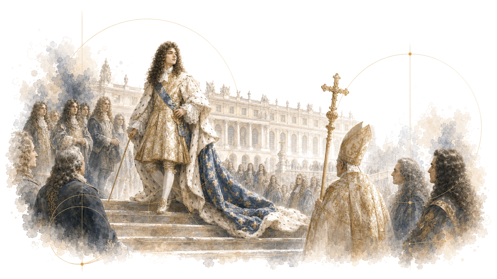
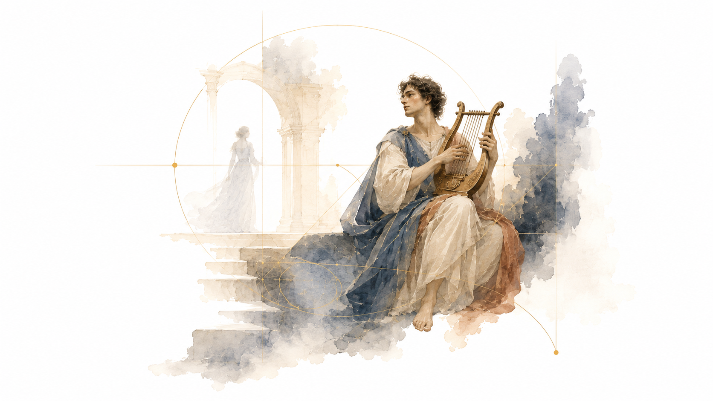
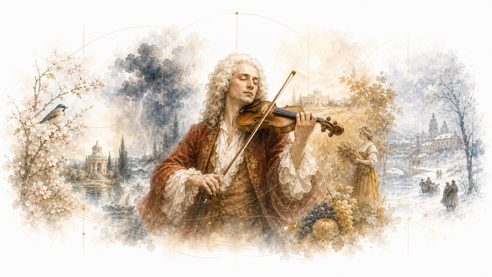
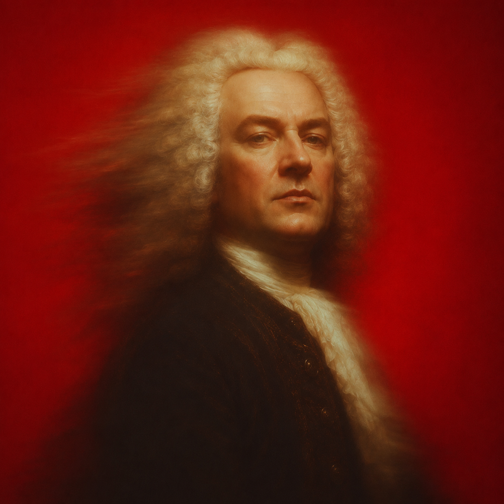
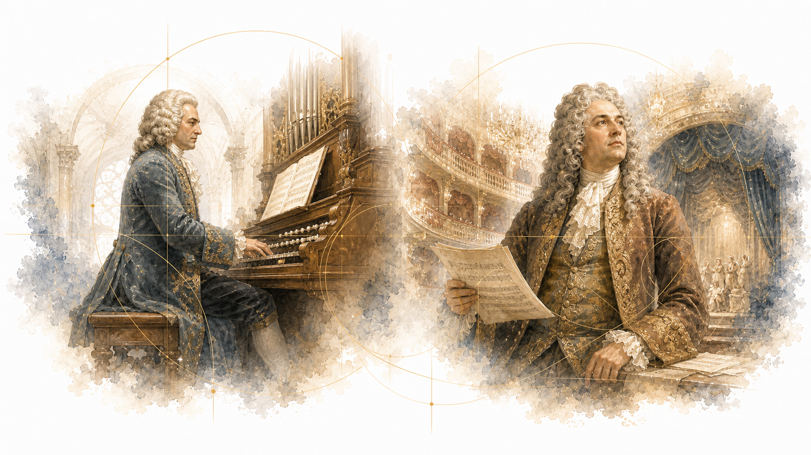
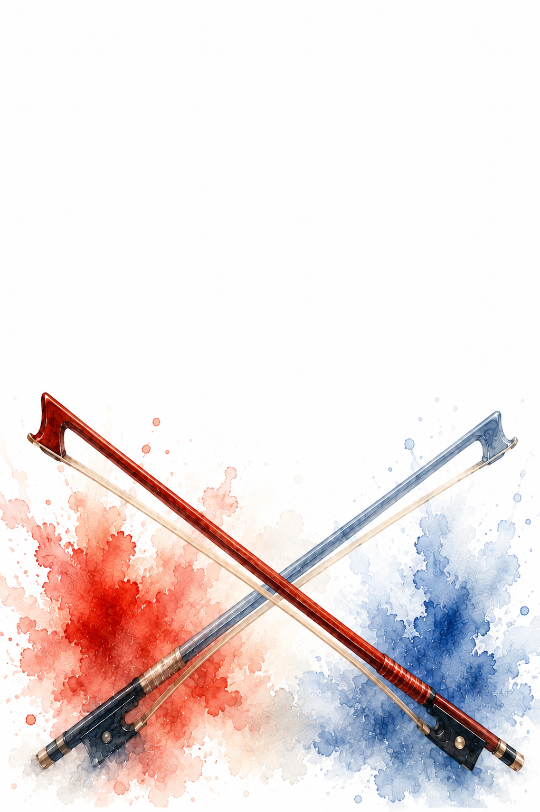

03 · Lezioni
Barocco
Dalle coordinate del Seicento agli autori: ascolti e attività costruiscono il nucleo.

01 Introduzione Introduzione al Barocco Contesto storico, forme, ascolti, timeline e concetti chiave. Mappa corte, chiesa, teatro, contrasto e meraviglia. ↗
02 Autore Monteverdi L'Orfeo e la nascita del teatro musicale moderno. Distingui parola, scena e gesto musicale in un breve ascolto. ↗
03 Autore Vivaldi Concerto solista, energia ritmica e Quattro stagioni. Segui il dialogo solo/tutti e associa suono e immagine. ↗
04 Autore Bach Contrappunto, fuga e architettura musicale. Riconosci entrate, imitazioni e costruzione a strati. ↗
05 Autore Handel Opera, oratorio e grandi pubblici europei. Confronta teatro, cerimoniale, coro e racconto sacro. ↗
06 Attività Restituzione del nucleo Sintesi visuale, parole chiave e collegamenti sonori. Prepara cinque parole chiave, due ascolti e una consegna breve. ↗